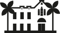
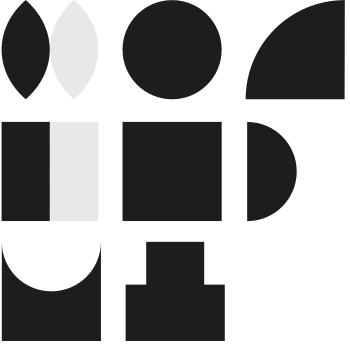
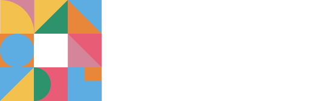
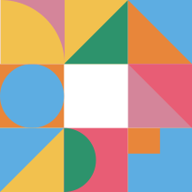
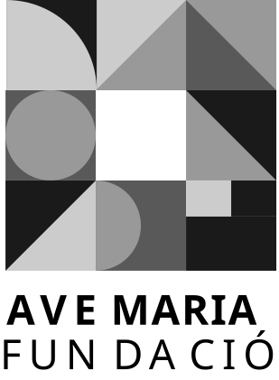
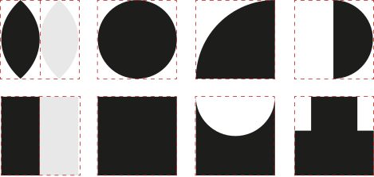
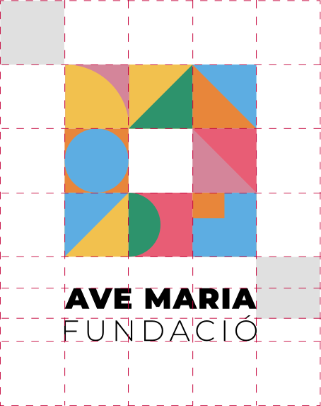
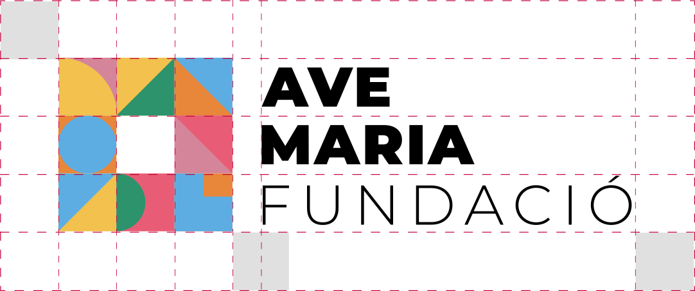
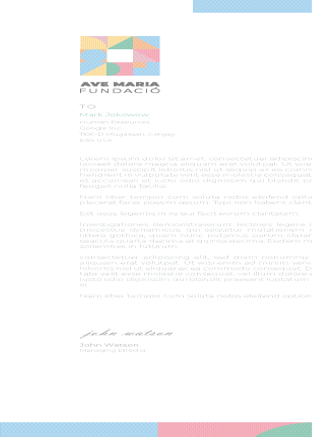

Una identitat viva per a un espai on tot passa. Sistema d'identitat visual generatiu per a la Fundació Ave Maria de Sitges.
Brand Guidelines
Versió 2.0 Marc 2026 Sitges, Catalunya
Manual d'Identitat Visual.
Una identitat viva per a un espai on tot passa. Sistema d'identitat visual generatiu per a la Fundació Ave Maria de Sitges.
02
La Fundació
Section 01
03
01 — La Fundació
Section 01Fundació Ave Maria de Sitges
Des de 1987, la Fundació Ave Maria es una institucio privada sense anim de lucre que ofereix atenció especialitzada a persones adultes amb diversitat funcional, potenciant les seves capacitats per garantir la seva qualitat de vida.
Actualment beneficiem més de 800 persones a Sitges, Garraf i comarques veines, oferint serveis de residencia especialitzada, centres de dia, habitatges amb suport, formacio i inclusió laboral.
+35
Anys d'experiència
Des de 1987 treballant per la inclusió i la qualitat de vida de les persones amb diversitat funcional.
+800
Persones ateses
Beneficiaris directes dels nostres programes i serveis a tota la comarca del Garraf.
100%
Compromís
Dedicacio total a potenciar les capacitats de cada persona i el seu projecte de vida.
Villa Havemann
La casa que va veure neixer el projecte: la Villa Havemann, espai fundacional i simbol d'acollida, cura i pertinença. Un edifici reconeixible i carregat d'història que ara es transforma en el punt de partida d'una nova identitat.
04
Missió i Valors
Section 02
05
02 — Missió i Valors
Section 02El Nostre Propòsit
"Cada persona té un projecte de vida. Som aquí per caminar al seu costat."
01
Missió
Millorar la qualitat de vida de les persones amb diversitat funcional, potenciant les seves capacitats a través d'una atenció integral i personalitzada, innovadora i compromesa amb la comunitat.
Dit d'una altra manera: no "atenem casos". Caminem al costat de cadascú, al seu ritme, amb el seu projecte. Cada persona dalt amb la seva veu i la seva manera. La nostra feina és fer-li lloc.
02
Visió
Ser reconeguts com a líders en benestar i qualitat de serveis per a les persones amb diversitat funcional, destacant per la nostra capacitat d'innovació i excel·lència, tant per part dels usuaris com de col·laboradors, voluntaris, famílies i altres grups d'interès.
Dit d'una altra manera: volem ser una casa oberta. Un lloc on cada persona —tingui el cos, la ment o la història que tingui— se senti escoltada, respectada i útil.
06
02 — Missió i Valors
Valors Fonamentals
01
Responsabilitat
Estem aquí. Cada dia. Per a la gent que ens confia hores, anys i, de vegades, vides senceres.
02
Respecte
Cada persona dalt amb la seva veu, el seu ritme i la seva manera. La nostra feina es fer-li lloc, no encaixar-la a la nostra.
03
Transparència
Parlem clar. Amb les families, amb les persones que acompanyem, amb la comunitat. També quan es incomode.
04
Innovació
No ens conformem amb "sempre s'ha fet aixi". Quan trobem una manera millor de cuidar, l'apliquem.
05
Eficàcia
Cada hora, cada euro, cada gest te impacte real en algu. No malbaratem res del que la societat ens confia.
06
Treball en Equip
Sols no arribem enlloc. Junts —equip, families, voluntaris i les persones que acompanyem— construim la Fundació cada dia.
07
Veu de Marca
Section 03
08
03 — Veu de Marca
Section 03Com Parlem
"Parlem amb les persones, no sobre les persones." No és un eslògan, és un compromís. La nostra veu reflecteix la nostra feina: directa, calida i centrada en cada persona real. Sense distància institucional, sense paraules que amaguen.
01
Propera i humana
No som "una entitat". Som persones que cuidem persones. Cada missatge ha de sonar com si una companya teva l'estigues escrivint.
02
Clara i accessible
Si una avia, una nena de 12 anys o un adult amb dificultats de comprensio no ens entenen, és culpa nostra, no seva. Senzillesa = respecte.
03
Optimista i activa
Mirem que sap fer una persona, no que li falta. Parlem des de la possibilitat, no des de la mancanca. Sempre mirem endavant.
09
03 — Veu de Marca
Aixi si · Aixi no
Aixi si — recomanat
"Acompanyem cada persona en el seu projecte de vida."
Directe, positiu, centrat en la persona.
"A la Fundació sempre hi ha un lloc per a tu."
Inclusiu, acollidor, coherent amb l'espai en blanc de la identitat.
"Avui en Marc ha pintat un quadre. Dema sera una altra cosa. Sempre passa alguna cosa."
Concret, viu, amb noms propis. Mostra la diversitat del dia a dia.
"Aquí cadascu aporta el que pot. Tots aportem alguna cosa."
Reciprocitat, no assistencialisme. Tothom dona i tothom rep.
Aixi no — evitar
"Atenem discapacitats amb problemes d'adaptació social."
Estigmatitzant, distant, llenguatge obsolet. "Discapacitat" no defineix una persona.
"La nostra entitat es lider en el sector de l'atenció a la dependencia."
Corporatiu, fred, centrat en l'organitzacio. La Fundació no es protagonista.
"Oferim serveis assistencials per als nostres beneficiaris."
"Beneficiari" anonimitza i posa la persona en una posició passiva.
"Treballem per la inserció dels nostres usuaris."
"Usuaris" cosifica. "Inserir" insinua que la persona ha d'encaixar a un motlle.
10
03 — Veu de Marca
Section 03 · Claims i FrasesCom sona la marca
Frases curtes, directes, memorables. Capturen el to en una linia. Es poden fer servir en cartells, xarxes, samarretes, banners o capçaleres web.
Aquí cabes tu.
Una casa per a totes les vides.
No atenem casos. Acompanyem persones.
Cuidem com ens agradaria que ens cuidessin.
Cada persona, un projecte. Cada projecte, un futur.
Ningu es queda fora.
11
03 — Veu de Marca
Section 03 · Aplicacions del toLa veu en context
Com sona la veu de la Fundació en situacions reals: un email a una familia, un post a xarxes, la introducció d'una memòria anual, un missatge despres d'un avenc.
Email · Benvinguda a una familia
"Hola Anna, benvinguda a la Fundació. T'ho repetim, encara que ja ho sapigues: aquí ja ets a casa. Si necessites qualsevol cosa —sigui el que sigui— truca al Joan al 938 94 XX XX. Hi és tots els dies entre les 9 i les 17h."
Xarxes socials · Un dijous qualsevol
"Avui hem omplert el pati de musica. La Nuria ha cantat. El Marc ha ballat. La Maria ha rigut més que mai. Així són els nostres dijous."
Memòria anual · Introducció
"Aquesta memòria parla de la Sandra. Del Pere. De l'Aleix. Dels seus avencos, les seves cançons, els seus matins. Les xifres també hi són. Però venen al final."
Missatge a una familia · Avenc
"Avui el teu fill ha apres a fer-se el cafè sol. Es una cosa petita. Es una cosa enorme."
Personalitat de Marca
Acollidora — Com una casa que sempre te un lloc per a un més. Viva — Cada dia passen coses que ningu havia previst. Aixo ens agrada. Diversa — Com les formes del nostre isotip: cada una es diferent, totes hi cabem. Propera — Et truquem pel teu nom. Et mirem als ulls.
12
03 — Veu de Marca
Section 03 · StagesTres moments, tres tons
El nostre to de veu i les pautes visuals s'adapten al recorregut de cada persona amb la Fundació. Identifiquem tres moments amb intencions i estats d'ànim diferents:
01
Quan ens troben fora dels nostres canals: xarxes, anuncis, materials de difusió.
Acollida
Expressem la personalitat al volum més alt. Cridem l'atenció amb història, calidesa i color. Aquí podem ser:
Càlids Inspiradors Centrats en històries Diversos i viscuts
Atributs principals
Acollidora Viva Inspiradora
02
Quan ens reconeixen i s'apropen: web, primeres trucades, entrevistes, visites.
Acompanyament
Expressem la nostra identitat però també hem d'informar amb claredat. Combinem la calidesa amb la pràctica. Som:
Propers Clars i informatius Pacients Concrets
Atributs principals
Propera Honesta Pràctica Inspiradora
03
Quan ja en formen part: famílies, residents, equip, voluntaris i col·laboradors.
Comunitat
El protagonista és la persona, no el missatge. La nostra veu baixa de volum i prioritza la informació clara i la cura quotidiana. Som:
Discrets Constants Amb noms propis Propers cada dia
Atributs principals
Honesta Quotidiana Acollidora
Híbrid d'acollida i comunitat
13
03 — Veu de Marca
Section 03 · RecorregutEl recorregut de la marca
El mateix missatge té paraules diferents segons on som al recorregut amb la persona. Tres moments. Tres veus. Una sola identitat.
Què comuniquem
Voluntariat "Cerquem persones que vulguin venir."
Taller de pintura "Comencem una activitat nova."
Portes obertes "Vine a conèixer la casa."
Acollida
Acollidora Viva Inspiradora
"Aquí cap tothom. També tu. Vine."
"Cada quadre és un món. Aquí pintem dimecres."
"Aquesta és la nostra casa. La pots venir a veure."
Acompanyament
Propera Honesta Pràctica
"Cerquem voluntaris per als tallers. Dos vespres al mes. T'expliquem com."
"Comencem un taller de pintura amb l'artista Maria Camps. Inscripcions obertes."
"Dissabte 12 d'abril, jornada de portes obertes de 10h a 14h. Reserva visita."
Comunitat
Honesta Quotidiana Acollidora
"Si pots venir el dimecres, fem manualitats al pati. T'esperem amb un cafè."
"Demà comencem el taller. La Maria portarà els pinzells."
"Dissabte tindrem visites. Si vols ajudar a guiar, t'esperem a recepció a les 10h."
14
Concepte Creatiu
Section 04
15
04 — Concepte Creatiu
Section 04Un espai on tot passa
La Fundació es un lloc viu. Un punt de trobada on convergeixen disciplines, generacions, cultures i idees. No es defineix per una sola activitat, sinó per la suma de totes elles.
Deconstruir per Construir
Partim de l'edifici com a origen. No l'il·lustrem. El deconstruim.
Simplifiquem els seus volums, corbes i proporcions essencials fins obtenir formes geomètriques pures. Aquestes peces es reorganitzen dins un contenidor comu: el quadrat.
El resultat no és una facana, sinó un sistema grafic. Una estructura on les parts dialoguen, s'equilibren i generen noves composicions.
El Quadrat com a Territori
El quadrat actua com a marc i com a metafora. Representa l'espai que la Fundació ofereix a la comunitat: estable, acollidor i obert.
Dins d'ell, cada forma simbolitza iniciatives, persones o projectes. Cap prevaleix sobre una altra. Totes conviuen en harmonia.
El conjunt transmet obertura, inclusió i contemporaneitat.
El Buit com a Invitacio
En cada composició deixem un espai en blanc. No es un buit. Es un gest. Un lloc reservat per a qui dalt. Per a noves veus. Per a idees que encara no existeixen. El blanc comunica que la Fundació no està completa sense les persones que l'habiten.
16
04 — Concepte Creatiu
De Valors a Identitat
Cada decisió visual del sistema es la traduccio d'un valor de la Fundació. La identitat no decora: significa.
Inclusió
Formes que conviuen
→
Diversitat
Colors variats
→
Obertura
Espai en blanc
→
Innovació
Sistema generatiu
→
Pertinença
El quadrat-llar
16
04 — Concepte Creatiu
Section 04 · EvolucióDe l'Edifici al Sistema
El logotip històric d'Ave Maria representava la Villa Havemann amb tots els seus detalls: palmeres, finestres, torre, campanar. Al rebranding vam decidir no il·lustrar l'edifici, sinó deconstruir-lo fins als seus volums essencials. Les formes geomètriques pures que en resulten —cercles, semicercles, quarts, triangles, rectangles— són les peces que avui composen el sistema visual generatiu de la Fundació.
01 — Origen
Logotip històric
Villa Havemann amb palmeres, torre i campanar. Un símbol detallat però tancat, lligat a una imatge concreta de l'edifici.

02 — Simplificació
Volum, no detall
Reduïm els elements arquitectònics als seus volums essencials. Les proporcions guanyen pes; els detalls desapareixen.
03 — Elements primaris
Forma, no figura
L'edifici desapareix com a representació; les seves formes es converteixen en peces autònomes: cercles, quarts, semicercles, triangles, rectangles.

04 — Sistema generatiu
Estructura, no símbol
Les 21 formes es combinen dins una graella 3×3 per generar infinites composicions úniques. El passat no desapareix: es converteix en estructura.
17
El Logotip
Section 05
18
05 — El Logotip
Section 05 · Versió VerticalAnatomia del Logotip
L'isotip a sobre, el naming "AVE MARIA / FUNDACIO" a sota. Una unitat inseparable. Aquesta és la versió d'us preferent en aplicacions amb espai vertical suficient. S'utilitza tant en positiu sobre fons clar com en negatiu sobre fons fosc.
Color del Naming · #2C2C2C
El text del logotip ("AVE MARIA / FUNDACIÓ") s'imprimeix sempre en #2C2C2C, un gris molt fosc en lloc de negre pur. Suavitza el contrast i transmet proximitat, coherent amb els valors acollidor i proper de la marca.
19
05 — El Logotip
Section 05 · Versió HoritzontalUs Secundari
S'utilitza quan l'espai disponible es més ample que alt: capçaleres, banners, signatures de correu i situacions de format apaisat. L'isotip va a l'esquerra i el naming a la dreta. Disponible en positiu sobre fons clar i negatiu sobre fons fosc.

20
05 — El Logotip
Section 05 · Només IsotipÚs Terciari
L'isotip aïllat es pot fer servir en aplicacions on el text "AVE MARIA / FUNDACIÓ" no és necessari o no es llegible: avatars de xarxes, favicons, icones d'app, segells, patrons. Disponible en positiu sobre fons clar i negatiu sobre fons fosc.

Mides de referència: 120px · 64px · 32px
21
05 — El Logotip
Section 05 · Versió MonocromaUna sola tinta
Per a aplicacions sobries amb matisos: editorial, documents, informes i senyalètica. Utilitza els 4 tons de gris de la paleta Monocroma per mantenir la diversitat visual sense color. Disponible en positiu i negatiu.

22
Vocabulari Visual
Section 06
23
06 — Biblioteca de Formes
Section 06El Vocabulari Visual
El sistema d'identitat utilitza 21 formes geomètriques pures, derivades del cercle, el quadrat i el triangle. Representen la deconstrucció de la Villa Havemann en els seus volums essencials.

Origen de les Formes
Cada forma del vocabulari visual neix de la deconstrucció de la Villa Havemann: els arcs de les finestres es transformen en semicercles, els volums del sostre en quarts de cercle, les proporcions dels murs en rectangles. El passat no desapareix: es converteix en estructura.
24
Sistema Generatiu
Section 07
25
07 — Sistema Generatiu
Section 07Regles de Composició
La identitat es planteja com un sistema generatiu perquè la realitat de la fundació també ho es: diversa, canviant i en constant transformacio.
Principis
01 Graella 3x3
L'isotip sempre es compon de 9 cel·les disposades en una graella quadrada de 3x3.
02 Un espai en blanc
Una cel·la sempre roman en blanc. Es l'espai d'invitacio, el lloc reservat per a qui dalt.
03 Paleta oficial
Les formes nomes utilitzen colors de la paleta corporativa. No s'admeten colors externs.
04 Contrast cromatic
Dues cel·les adjacents no han de compartir el mateix color de fons.
05 Text justificat
El text sempre va sota (o al costat en versió horitzontal), justificat a l'amplada de l'isotip.
Variacions
Cada composició es única però reconeixible. Aquí es mostren 6 variacions del sistema:
Cada composició es única, però totes comparteixen el mateix ADN visual.
26
Espai i Mida
Section 08
27
08 — Espai i Mida
Section 08 · Versió VerticalClearspace
Per garantir la correcta lectura i impacte del logotip, cal respectar sempre un espai de protecció al seu voltant.
Area de Protecció
L'espai de respecte mínim al voltant del logotip vertical equival a 1 cel·la de la graella de l'isotip per cada banda. Cap altre element grafic, text o imatge ha d'envair aquesta zona.
Mida Mínima
25mm d'amplada en impressió · 100px en digital. Per sota d'aquestes mides el text "AVE MARIA / FUNDACIO" perd llegibilitat.

28
08 — Espai i Mida
Section 08 · Versió HoritzontalClearspace
L'espai de protecció garanteix que el logotip respiri en qualsevol composició i que la seva forca visual no quedi diluida per altres elements.
Area de Protecció
En la versió horitzontal, la regla es la mateixa: 1 cel·la de la graella de respecte al voltant del bloc complet (isotip + paraules). El logo manté la seva integritat com a unitat.
Mida Mínima
40mm d'amplada en impressió · 160px en digital. La versió horitzontal demana més amplada per mantenir la legibilitat del text.

29
08 — Espai i Mida
Section 08 · Imagotip SolClearspace
Quan l'isotip s'utilitza aillat —avatars, favicons, segells, icones d'app— també necessita el seu espai propi.
Area de Protecció
Al voltant de l'isotip aillat, deixar un mínim equivalent a 1/3 de la seva amplada. Aquest espai protegeix la lectura de la graella 3x3 i evita que les formes es confonguin amb altres elements visuals.
Mida Mínima
8mm en impressió · 24px en digital. A mides molt petites, els detalls de les formes interiors es perden.
Co-branding
Junt amb el logotip d'una altra entitat: 2x de separacio. El logotip associat no ha de superar l'alcada de l'isotip.
30
Usos Incorrectes
Section 09
31
09 — Usos Incorrectes
Section 09El que Mai s'ha de Fer
Per protegir la integritat de la marca, es fonamental evitar les seguents manipulacions del logotip.
Incorrecte
Reduir l'opacitat
Els colors han de mantenir sempre la seva vivacitat. No aplicar transparencies.
Incorrecte
Deformar o inclinar
No modificar les proporcions, rotar, estirar o inclinar l'isotip.
Incorrecte
Colors fora de paleta
Nomes s'han d'utilitzar els colors de les paletes oficials. Mai colors arbitraris.
Incorrecte
Afegir ombres o efectes
No afegir ombres, brillantors, contorns o qualsevol efecte visual al logotip.
Incorrecte
Canviar la graella
La graella sempre es de 3x3. No reduir a 2x2 ni ampliar a 4x4 o altres formats.
Incorrecte
Eliminar l'espai en blanc
Sempre ha d'haver una cel·la buida. Es un element conceptual irrenunciable de la identitat.
Incorrecte
Rotar l'isotip
L'isotip sempre s'ha de mostrar en la seva orientació original, sense cap rotacio.
Incorrecte
Degradats a les cel·les
Les cel·les han de ser de color pla. No aplicar degradats ni textures dins les formes.
Com es distribueixen els colors en una aplicació, més enlla del propi isotip.
60%
Neutres
Blanc, gris clar · fons
30%
Color principal
Taronja, blau o verd · elements destacats
10%
Accent
Coral, groc, rosa · detalls
Dins l'isotip, en canvi, tots els colors de la paleta seleccionada tenen el mateix pes — el sistema generatiu garanteix l'equilibri.
⚠ Avis sobre els codis PANTONE — Els codis PANTONE indicats són equivalencies aproximades calculades a partir dels valors HEX i RGB. Les pantalles digitals (RGB) no reprodueixen fidelment els colors PANTONE, que son tintes fisiques. Per a impressió professional critica (offset, serigrafia, packaging), es recomana contrastar sempre els colors amb una guia PANTONE Color Bridge fisica abans de validar la produccio final.
37
Tipografia
Section 11
38
11 — Tipografia
Section 11Montserrat
Montserrat és la tipografia corporativa de la Fundació Ave Maria. Una sans-serif geomètrica, moderna i altament llegible que reflecteix els valors de claredat, accessibilitat i contemporaneïtat.
76/80pt
Els titulars sempre en Montserrat Medium. Subtítols en Regular.
44/48pt
Per a informació destacada, Regular amb Medium per als èmfasis.
22/24pt
El cos de text sempre va en Montserrat Regular per a una lectura clara fins i tot a mides petites.
14/16pt
Montserrat Regular també per a les notes al peu i metadades.
39
Aplicacions
Section 12
40
12 — Aplicacions
Section 12Exemples d'Us
La identitat generativa permet crear materials unics per a cada ocasio, mantenint sempre la coherència de marca.
Targeta de Visita · Paper de Carta
Targeta de visita (anvers · revers) · Paper de carta A4
41
12 — Aplicacions
Aplicacions Reals
La identitat passa de la pantalla al món físic. Tres exemples reals: un vehicle corporatiu, el vestuari de l'equip i un pin de marca.
Vehicle Corporatiu
Les formes del vocabulari visual s'amplien a gran escala creant un patró envoltant. El logotip horitzontal en negre s'integra dins una zona neutra per garantir la legibilitat.
Vestuari · Polo Equip
Logotip vertical brodat al pit esquerre del polo blanc, en mida petita per a una presència discreta i elegant. L'isotip a color manté l'energia de la marca.

Falta la imatge web/BRANDBOOK_MARCA/aplicacions/pin.png
';">
Pin · Insígnia
El sistema generatiu condensat en una peça quadrada de merchandising. Una variació única de l'isotip esmaltat, amb la cel·la blanca que recorda l'invitació a qui arriba.
42
Un lloc per a tothom.
Cada aplicació de la identitat és una oportunitat de comunicar els nostres valors. L'espai en blanc sempre present ens recorda que la Fundació està oberta a noves persones, noves idees i nous projectes. La identitat, com la propia organitzacio, està viva i en constant evolució.
AVE MARIA FUNDACIO · Manual d'Identitat Visual · v2.0 · Marc 2026 · Sitges, Catalunya